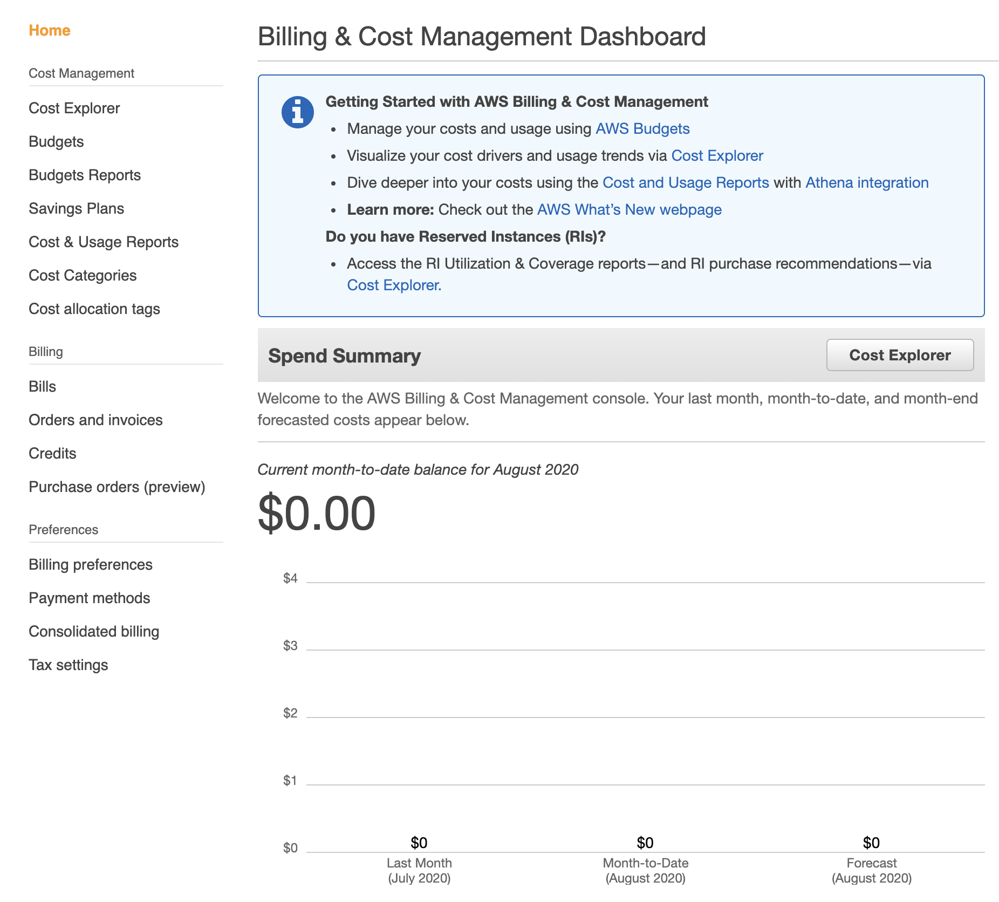
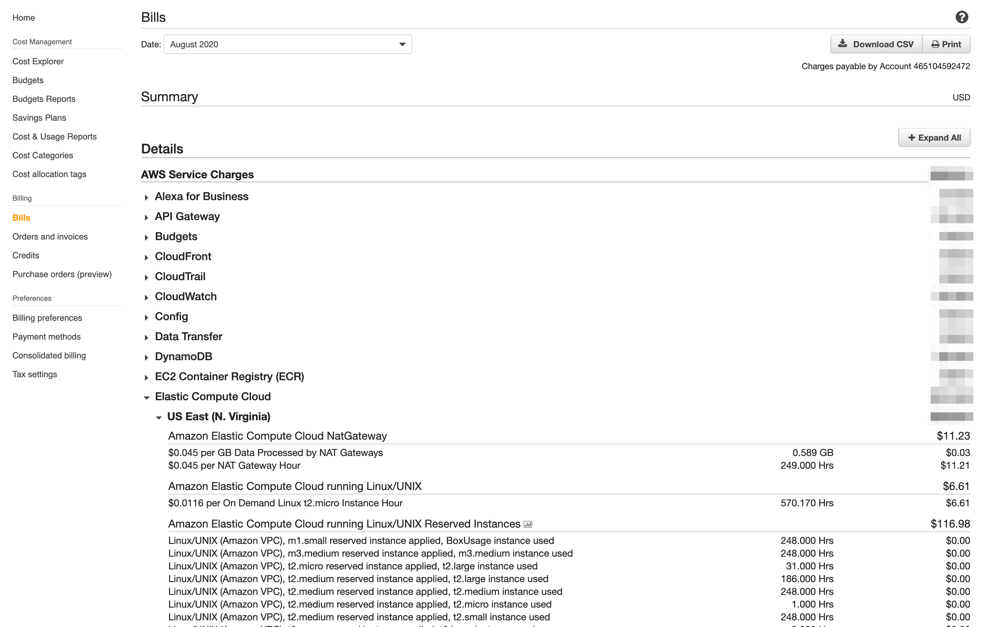
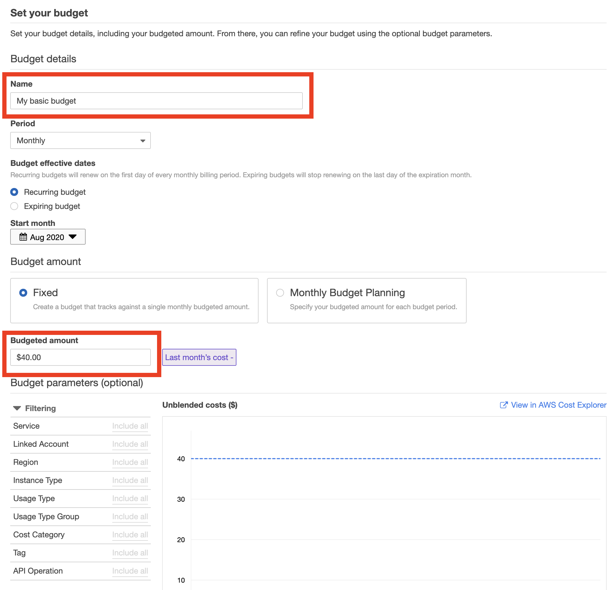
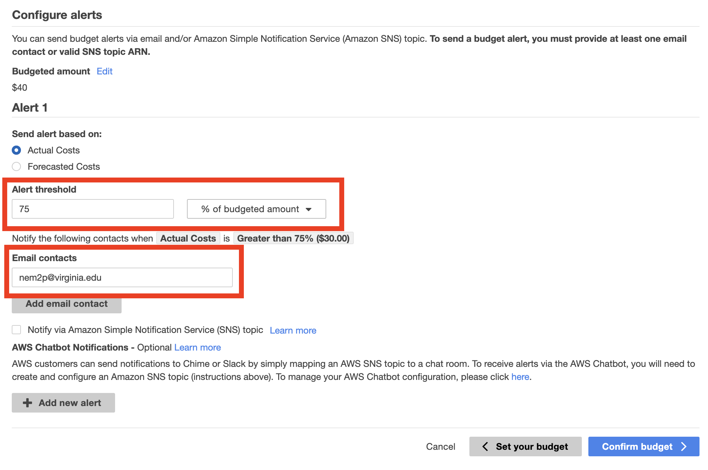
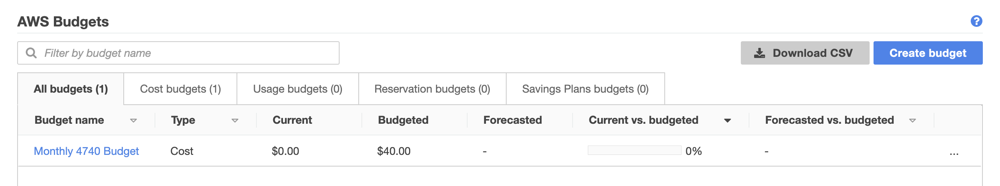

CS4740 Cloud Computing
Neal Magee, Ph.D.
Solution Architect, Research Computing
University of Virginia, Fall 2020
Lab: Cost Control in AWS
Effectively anticipating, monitoring, and controlling your costs in a public cloud is vital. Unlike previous hardware models where purchased infrastructure is paid for and runs 24/7 for much less costs, public cloud infrastructure can quickly and easily accrue costs in the hundreds and thousands of dollars.
This lab introduces the basics of cost control in your Amazon Web Services account.
- Sign into your AWS account.
- Go to the Billing Service
https://console.aws.amazon.com/billing/ - Review your Spend Summary on that page. Click through using the Cost Explorer button and visit the Cost Management service. This allows you to drill down into your current spending, broken down by service and region. This service also projects your anticipated monthly charge. It is important that you can identify the source of every charge and how to disable services as needed. 
- Return to the Billing console.
- Click through to the Bills section of the Billing Service.
https://console.aws.amazon.com/billing/home#/bills - At the top of the page is a drop-down list to select current and past bills for your account. Below that is an itemized list of every service in which you incur a charge for that month. These are aggregated by service and region. More explanation on pricing for services such as S3 and EC2 will be touched on later in the course. 
- Even if you have no charges so far, it is good to know where to look for these charges. These itemized bills are granular down to the actual seconds of operation for some services such as EC2 and RDS.
- An important backstop to cost overrun is setting up a budget and alarm should your charges come close to your budgeted amount. In the next steps you will create a budget and budget alarm.
- Go to the Budgets page within the Billing Service
https://console.aws.amazon.com/billing/home?#/budgets - Click on the Create budget button.

- Notice that you can set up multiple budgets of a variety of types. Read through each of the four budget types, and then select Cost budget. Click on Set your budget.
- Give your budget a name and set the monthly amount for your budget. This is a simple budget for all services, so you do not need to use filters, regions, types, tags, etc. But take note that these filters can be helpful for additional budgets that are finely scoped to a specific project or application you are running in the midst of other infrastructure. 
- Click Configure Alerts to go to the next step.
- Create a simple budget alert based on actual costs. You can then set the percentage of your budget that you would like to trigger email alerts, such as 75% or 80% of the total. Next, specify an email address for the alert to be sent to. You can send alerts to multiple addresses, as well as the SQS service for more automated integration. 
- Click on Confirm budget.
- You are then presented with a confirmation screen. From here you can go back and change any parameters of your budget or alert, or save it by clicking on Create.
- At any point you can review your budgets at a glance and track their progress of forecasted vs. actual expenses. 
- You will now receive email alerts as you approach your monthly budget!